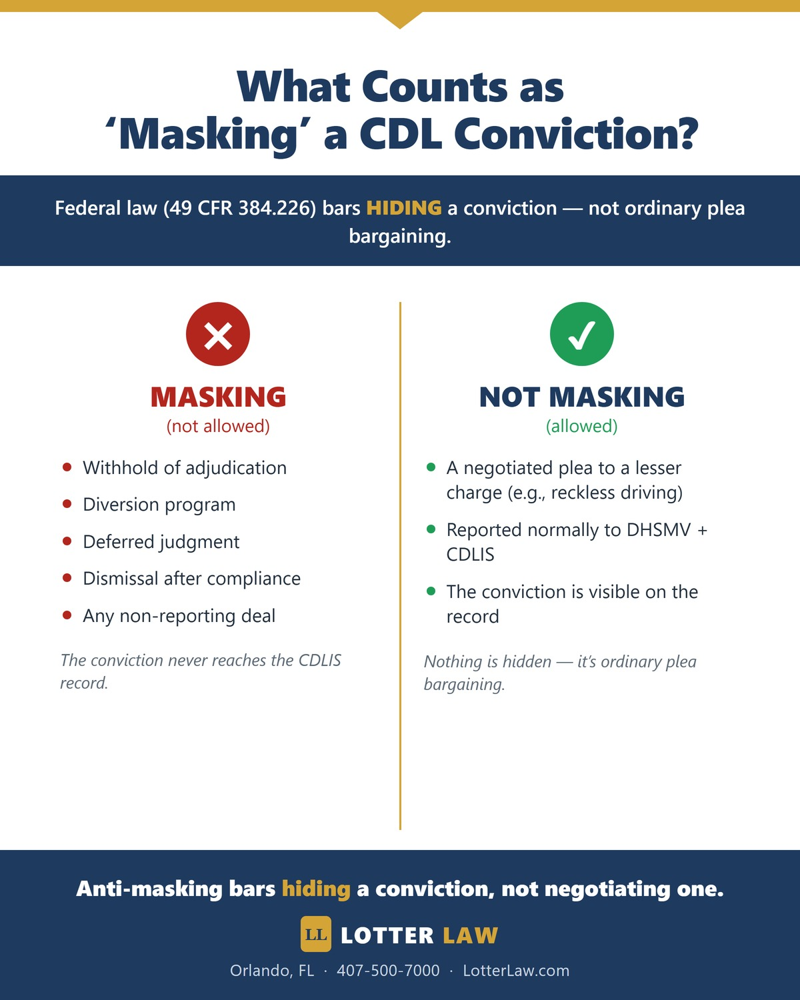

CDL DUI in Florida: Does Anti-Masking Block a Reckless Plea?
For most drivers, getting a DUI reduced to reckless driving is a good result. For a commercial driver, it can be the difference between keeping a career and losing it. In a recent Florida case, we built a strong defense and the State agreed to reduce the charge to reckless driving. Then, on the day of the plea, the judge hesitated over one of the most misunderstood rules in commercial driving law: the CDL anti-masking rule.
The driver was charged with DUI under Florida Statute 316.193 after a minor crash. He held a commercial driver's license (CDL) — which is exactly why anti-masking came up. Here is what that rule actually says, why it does not bar a properly reported reckless plea, and what it means for any commercial driver facing a DUI.
A Weak DUI Case From the Start
The facts did not look like a DUI. The crash was minor. Our client was cooperative from the first moment of contact, and he did not appear intoxicated. In our view, the officers jumped the gun — moving into a DUI investigation before the facts justified it. After we reviewed the body camera footage and the rest of the evidence, we filed a motion to suppress, challenging how the stop and the investigation were handled.
Why This DUI Case Was Weak
- A minor crash — not the kind of driving pattern that points to impairment.
- A cooperative driver — compliant and responsive throughout the encounter.
- No real signs of intoxication — the client did not appear impaired on the video.
- A rushed investigation — the officers moved to a DUI investigation before the facts supported it.
- Body camera footage — what the video showed mattered, and it drove our motion to suppress.
The State Agreed to Reduce the Charge to Reckless Driving
Faced with those problems, the State agreed to resolve the case as reckless driving under F.S. 316.192 instead of DUI. For most clients, that would have been the finish line. For a commercial driver, it should have been a major win — protecting both the license and the livelihood that depends on it.
The Anti-Masking Rule — and What It Actually Means
On the day of the plea, the judge raised a concern we see often in CDL cases: the federal anti-masking rule. For a commercial driver, a court has to be careful not to "mask" a conviction. The rule is real — but it is also one of the most misunderstood rules in this area, including in how it gets applied to plea deals like this one. Here is what it actually says, at 49 CFR 384.226:
"The State must not mask, defer imposition of judgment, or allow an individual to enter into a diversion program that would prevent a CLP or CDL holder's conviction for any violation, in any type of motor vehicle, of a State or local traffic control law (other than parking, vehicle weight, or vehicle defect violations) from appearing on the CDLIS driver record …"
— 49 CFR 384.226, Prohibition on masking convictions
Read closely, the rule prohibits exactly one thing: keeping a conviction off the record. That word matters. Under federal regulation (49 CFR 383.5), a "conviction" is an accepted guilty or no-contest plea, an adjudication, or a similar final disposition. "Masking" is using a tool — a withhold of adjudication, a diversion program, a deferral, a dismissal-after-compliance, or a non-reporting deal — so that the conviction never shows up on the commercial driving record.
A negotiated plea to reckless driving is none of those things. It is a real, reportable conviction. Reported in the ordinary course to Florida's DHSMV and the national CDLIS system, it hides nothing — the reckless driving conviction appears on the record like any other. What federal law forbids is concealment. It does not abolish the ordinary plea bargaining that happens before a conviction ever exists.

Why We Asked the Court to Accept the Plea
That distinction is the heart of the motion we filed. Our position is straightforward: this resolution masks nothing. The original DUI was litigated — we raised Fourth Amendment issues in a motion to suppress — and only after that litigation did the State offer reckless driving. The reckless conviction will be reported normally, and we proposed clear record language stating the court is not ordering a withhold, a diversion, or any non-reporting. In other words, the plea protects our client's livelihood without keeping a single thing from the federal system — which is precisely what the anti-masking rule is designed to prevent, and precisely what this plea does not do.
Why This Matters for Every Commercial Driver
This is where commercial drivers get hurt by a misunderstanding. The fear of "masking" can cause a perfectly proper, fully reported plea to stall — even though the law does not require that result. For a CDL holder, the gap between a manageable reckless driving conviction and a career-threatening DUI can come down to whether the court is shown the real line between hiding a conviction and ordinary plea bargaining.
It also means a commercial driver needs a defense that works on two fronts at once: pressing the merits — the rushed investigation, the lack of impairment, the motion to suppress — and being ready to explain, with authority, why a negotiated and fully reported plea does not violate federal law. Knowing that distinction is what protects a commercial driver's future.
Where This Case Stands
This case is still pending. The court has not yet ruled on our motion to accept the plea. The defense issues that produced the offer in the first place — the minor crash, the cooperative client, the rushed investigation, the lack of impairment, and the motion to suppress — remain in play. We will update this post when the court rules.
Every case is different. This post describes a matter that is still in progress and is not a guarantee or prediction of any outcome. No two cases are alike, and prior results do not predict future outcomes. This information is general and is not legal advice for any specific situation.
Do You Drive on a CDL and Face a DUI?
For a commercial driver, a DUI is a threat to your livelihood — and the rules are full of traps and misconceptions, even in the courtroom. Get advice from a defense team that knows how CDL cases actually work, before any decision is made. Call for a free consultation.
Legal References
Related Articles
Wrong Box, Real Consequences: DUI Formal Review Win
Why the suspension ground served on the citation matters at a DHSMV formal review.
BlogDUI Reduced to Reckless Driving: A Biased Police Witness
How challenging an officer's testimony changed a DUI case.
BlogDUI vs DWI in Florida: Complete Defense Guide
What the State has to prove — and where DUI cases fall apart.

Jeff Lotter
Criminal Defense Attorney | Former State Trooper
Jeff Lotter is an Orlando criminal defense attorney and former Florida Highway Patrol trooper. He uses his law enforcement background to build stronger defenses for clients facing DUI and criminal charges.